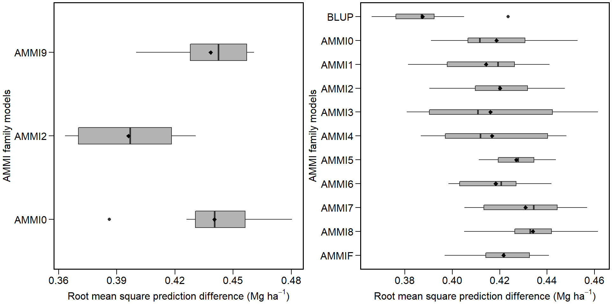

library(METAAB)
library(dplyr)
AMMI = data_ge %>% validation.AMMIF(ENV, GEN, REP, GY, nboot = 10, nrepval = 2)
BLUP = data_ge %>% validation.blup(ENV, GEN, REP, GY, nboot = 10, nrepval = 2)
bind_data = bind_val(AMMI, BLUP)
plot(bind_data)
g1 = data_ge %>% group_factors(ENV)
names(g1)## [1] "E1" "E10" "E11" "E12" "E13" "E14" "E2" "E3" "E4" "E5" "E6"
## [12] "E7" "E8" "E9"g2 = data_ge2 %>% group_factors(GEN, keep_factors = TRUE)
is.group_factors(g2)## [1] TRUEg3 = CO2 %>% as.group_factors()
names(g3)## [1] "Qn1 / Quebec / nonchilled" "Qn2 / Quebec / nonchilled"
## [3] "Qn3 / Quebec / nonchilled" "Qc1 / Quebec / chilled"
## [5] "Qc3 / Quebec / chilled" "Qc2 / Quebec / chilled"
## [7] "Mn3 / Mississippi / nonchilled" "Mn2 / Mississippi / nonchilled"
## [9] "Mn1 / Mississippi / nonchilled" "Mc2 / Mississippi / chilled"
## [11] "Mc3 / Mississippi / chilled" "Mc1 / Mississippi / chilled"## Variable GY
## ------------------------------ Individual analysis of variance--- ---------------------
## data frame with 0 columns and 0 rows
##
## ------------------------------- Genotype-vs-environment mean --------------------------
## E1 E10 E11 E12 E13 E14 E2 E3 E4 E5 E6 E7 E8 E9
## G1 2.37 2.31 1.356 1.34 3.00 1.53 3.04 4.08 3.49 4.17 2.81 1.90 2.27 2.78
## G10 1.97 1.54 0.899 1.02 1.83 1.86 3.15 4.11 4.27 3.37 2.48 2.24 2.70 3.15
## G2 2.90 2.30 1.491 1.99 3.03 1.43 3.23 4.57 3.72 3.83 2.54 1.99 2.05 3.36
## G3 2.89 2.34 1.568 1.76 3.47 2.06 3.61 4.13 4.13 4.13 2.98 2.16 2.85 3.29
## G4 2.59 2.17 1.370 1.53 2.64 1.86 3.19 3.85 3.30 3.78 2.70 1.98 2.30 3.72
## G5 2.19 2.14 1.326 1.69 2.57 1.78 3.14 3.74 3.38 3.47 2.43 1.66 2.71 3.30
## G6 2.30 2.21 1.501 1.39 2.91 1.80 3.29 3.43 3.40 3.57 2.34 1.76 2.54 3.04
## G7 2.77 2.44 1.364 1.95 3.18 1.94 2.61 4.10 3.02 4.05 2.67 2.55 2.58 3.14
## G8 2.90 2.57 1.683 2.00 3.52 1.99 3.44 4.11 4.14 4.81 2.91 2.26 2.88 2.83
## G9 2.33 1.74 1.125 1.41 2.95 1.57 3.09 4.51 3.90 3.93 2.77 1.39 2.49 1.94
##
## ------------------------------ Genotype-vs-environment effects -------------------------
## E1 E10 E11 E12 E13 E14 E2 E3
## G1 -0.0843 0.2030 0.0580 -0.1956 0.1592 -0.17803 -0.0687 0.0866
## G10 -0.3436 -0.4359 -0.2661 -0.3834 -0.8759 0.28030 0.1689 0.2530
## G2 0.3112 0.0519 0.0526 0.3149 0.0488 -0.42526 -0.0188 0.4344
## G3 0.0868 -0.1196 -0.0816 -0.1253 0.2784 -0.00338 0.1472 -0.2131
## G4 0.1002 0.0245 0.0341 -0.0489 -0.2416 0.11173 0.0424 -0.1777
## G5 -0.1955 0.1015 0.0943 0.2174 -0.2046 0.13926 0.0971 -0.1861
## G6 -0.0797 0.1731 0.2726 -0.0826 0.1422 0.15713 0.2514 -0.4895
## G7 0.1864 0.2000 -0.0706 0.2764 0.2075 0.08773 -0.6339 -0.0297
## G8 0.0493 0.0703 -0.0142 0.0621 0.2809 -0.11946 -0.0646 -0.2837
## G9 -0.0307 -0.2688 -0.0789 -0.0351 0.2050 -0.05001 0.0790 0.6057
## E4 E5 E6 E7 E8 E9
## G1 -0.1104 0.3306 0.2164 -0.0205 -0.1939 -0.2024
## G10 0.7987 -0.3418 0.0247 0.4578 0.3670 0.2964
## G2 -0.0296 -0.1530 -0.1918 -0.0712 -0.5610 0.2368
## G3 0.1776 -0.0649 0.0404 -0.1115 0.0329 -0.0440
## G4 -0.3408 -0.0956 0.0703 0.0243 -0.2035 0.7004
## G5 -0.1593 -0.3046 -0.0930 -0.1952 0.3089 0.3800
## G6 -0.1316 -0.2014 -0.1874 -0.0909 0.1432 0.1233
## G7 -0.7230 0.0707 -0.0640 0.4952 -0.0197 0.0167
## G8 0.1331 0.5722 -0.0845 -0.0565 0.0131 -0.5580
## G9 0.3851 0.1877 0.2689 -0.4316 0.1129 -0.9492
##
## ------------------------ Genotype + Genotype-vs-environment effects --------------------
## E1 E10 E11 E12 E13 E14 E2 E3
## G1 -0.1549 0.13242 -0.01260 -0.2662 0.08863 -0.24860 -0.1393 0.0160
## G10 -0.5466 -0.63896 -0.46916 -0.5864 -1.07896 0.07728 -0.0341 0.0500
## G2 0.3811 0.12184 0.12246 0.3848 0.11868 -0.35535 0.0511 0.5043
## G3 0.3679 0.16152 0.19946 0.1558 0.55952 0.27772 0.4283 0.0680
## G4 0.0679 -0.00786 0.00174 -0.0812 -0.27391 0.07940 0.0101 -0.2100
## G5 -0.3324 -0.03538 -0.04260 0.0805 -0.34153 0.00236 -0.0398 -0.3230
## G6 -0.2199 0.03294 0.13240 -0.2228 0.00204 0.01692 0.1112 -0.6297
## G7 0.2530 0.26668 -0.00393 0.3431 0.27421 0.15440 -0.5673 0.0370
## G8 0.3787 0.39966 0.31517 0.3915 0.61034 0.20993 0.2648 0.0457
## G9 -0.1948 -0.43288 -0.24293 -0.1992 0.04100 -0.21406 -0.0851 0.4417
## E4 E5 E6 E7 E8 E9
## G1 -0.1809 0.2600 0.14587 -0.09102 -0.2644 -0.2729
## G10 0.5957 -0.5448 -0.17834 0.25473 0.1639 0.0934
## G2 0.0403 -0.0831 -0.12188 -0.00127 -0.4911 0.3067
## G3 0.4587 0.2162 0.32150 0.16965 0.3140 0.2371
## G4 -0.3731 -0.1279 0.03797 -0.00801 -0.2358 0.6681
## G5 -0.2962 -0.4415 -0.22989 -0.33213 0.1720 0.2431
## G6 -0.2718 -0.3416 -0.32766 -0.23111 0.0030 -0.0169
## G7 -0.6563 0.1374 0.00269 0.56192 0.0470 0.0834
## G8 0.4625 0.9016 0.24491 0.27288 0.3425 -0.2286
## G9 0.2211 0.0237 0.10482 -0.59565 -0.0511 -1.1133
##
## ----------------------------- Genotype-vs-environment statistics -----------------------
## Mean Variance GENSS Ecoval Ecov.perc
## G1 2.60 10.90 32.7 1.219 3.91
## G10 2.47 14.24 42.7 7.955 25.48
## G2 2.74 11.34 34.0 3.032 9.71
## G3 2.96 10.13 30.4 0.725 2.32
## G4 2.64 8.93 26.8 2.343 7.51
## G5 2.54 7.82 23.5 1.844 5.91
## G6 2.53 7.34 22.0 1.806 5.79
## G7 2.74 7.33 22.0 4.162 13.33
## G8 3.00 10.82 32.4 2.569 8.23
## G9 2.51 14.75 44.2 5.563 17.82
##
## ----------------------------- Regression-based stability (anova) -----------------------
## Df Sum Sq Mean Sq F value Pr(>F)
## Total 139 323.788 2.3294 NA NA
## GEN 9 12.995 1.4439 6.277 3.05e-07
## ENV + (GEN x ENV) 130 310.793 2.3907 NA NA
## ENV (linear) 1 279.574 279.5736 NA NA
## GEN x ENV (linear) 9 3.615 0.4017 1.746 8.58e-02
## Pooled deviation 120 27.605 0.2300 NA NA
## G1 12 1.109 0.0924 1.062 3.92e-01
## G10 12 7.542 0.6285 7.222 1.66e-11
## G2 12 2.949 0.2458 2.824 1.14e-03
## G3 12 0.699 0.0582 0.669 7.81e-01
## G4 12 2.234 0.1862 2.139 1.48e-02
## G5 12 1.485 0.1238 1.422 1.55e-01
## G6 12 1.270 0.1058 1.216 2.71e-01
## G7 12 3.245 0.2704 3.107 3.72e-04
## G8 12 2.536 0.2113 2.428 5.15e-03
## G9 12 4.536 0.3780 4.343 2.42e-06
## Pooled error 280 24.367 0.0870 NA NA
##
## --------------------------- Regression-based stability (parameters) ---------------------
## GEN bij sdij
## 1 G1 1.063 -0.00142
## 2 G10 1.122 0.17727
## 3 G2 1.054 0.04969
## 4 G3 1.031 -0.01282
## 5 G4 0.937 0.02983
## 6 G5 0.887 0.00902
## 7 G6 0.861 0.00304
## 8 G7 0.819 0.05791
## 9 G8 1.034 0.03821
## 10 G9 1.192 0.09376
##
## -------------------------------------- End of data -------------------------------------head(data_ge)## # A tibble: 6 x 5
## ENV GEN REP GY HM
## <fct> <fct> <fct> <dbl> <dbl>
## 1 E1 G1 1 2.17 44.9
## 2 E1 G1 2 2.50 46.9
## 3 E1 G1 3 2.43 47.8
## 4 E1 G2 1 3.21 45.2
## 5 E1 G2 2 2.93 45.3
## 6 E1 G2 3 2.56 45.5matrix = data_ge %>% mmat(row = GEN, col = ENV, val = GY)
matrix## E1 E10 E11 E12 E13 E14 E2 E3 E4 E5 E6 E7 E8 E9
## G1 2.37 2.31 1.356 1.34 3.00 1.53 3.04 4.08 3.49 4.17 2.81 1.90 2.27 2.78
## G10 1.97 1.54 0.899 1.02 1.83 1.86 3.15 4.11 4.27 3.37 2.48 2.24 2.70 3.15
## G2 2.90 2.30 1.491 1.99 3.03 1.43 3.23 4.57 3.72 3.83 2.54 1.99 2.05 3.36
## G3 2.89 2.34 1.568 1.76 3.47 2.06 3.61 4.13 4.13 4.13 2.98 2.16 2.85 3.29
## G4 2.59 2.17 1.370 1.53 2.64 1.86 3.19 3.85 3.30 3.78 2.70 1.98 2.30 3.72
## G5 2.19 2.14 1.326 1.69 2.57 1.78 3.14 3.74 3.38 3.47 2.43 1.66 2.71 3.30
## G6 2.30 2.21 1.501 1.39 2.91 1.80 3.29 3.43 3.40 3.57 2.34 1.76 2.54 3.04
## G7 2.77 2.44 1.364 1.95 3.18 1.94 2.61 4.10 3.02 4.05 2.67 2.55 2.58 3.14
## G8 2.90 2.57 1.683 2.00 3.52 1.99 3.44 4.11 4.14 4.81 2.91 2.26 2.88 2.83
## G9 2.33 1.74 1.125 1.41 2.95 1.57 3.09 4.51 3.90 3.93 2.77 1.39 2.49 1.94df1 = data.frame(v1 = c(1, 2), v2 = c(2, 3))
df2 = data.frame(v3 = c(4, 5))
rbind_fill(df1, df2)## v1 v2 v3
## 1 1 2 .
## 2 2 3 .
## 3 . . 4
## 4 . . 5rbind_fill(df1, df2, fill = "NA")## v1 v2 v3
## 1 1 2 NA
## 2 2 3 NA
## 3 NA NA 4
## 4 NA NA 5